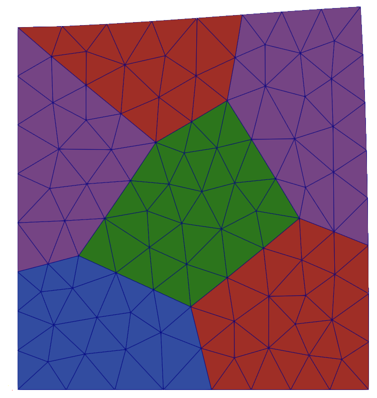

Linear elasticity

Figure 1: Linear elastically deformed Ferrite logo.
This example is also available as a Jupyter notebook: linear_elasticity.ipynb.
Introduction
The classical first finite element problem to solve in solid mechanics is a linear balance of momentum problem. We will use this to introduce a vector valued field, the displacements $\boldsymbol{u}$. In addition, some features of the Tensors.jl toolbox is demonstrated.
The strong form of the balance of momentum for quasi-static loading is given by
\[\begin{align*} \boldsymbol{\sigma} \cdot \boldsymbol{\nabla} + \boldsymbol{b} &= 0 \quad \boldsymbol{x} \in \Omega \\ \boldsymbol{u} &= \boldsymbol{u}_\mathrm{D} \quad \boldsymbol{x} \in \Gamma_\mathrm{D} \\ \boldsymbol{n} \cdot \boldsymbol{\sigma} &= \boldsymbol{t}_\mathrm{N} \quad \boldsymbol{x} \in \Gamma_\mathrm{N} \\ \end{align*}\]
where $\boldsymbol{\sigma}$ is the (Cauchy) stress tensor and $\boldsymbol{b}$ the body force. The domain, $\Omega$, has the boundary $\Gamma$, consisting of a Dirichlet part, $\Gamma_\mathrm{D}$, and a Neumann part, $\Gamma_\mathrm{N}$, with outward pointing normal vector $\boldsymbol{n}$. $\boldsymbol{u}_\mathrm{D}$ denotes prescribed displacements on $\Gamma_\mathrm{D}$, while $\boldsymbol{t}_\mathrm{N}$ the known tractions on $\Gamma_\mathrm{N}$.
In this example, we use linear elasticity, such that
\[\boldsymbol{\sigma} = \boldsymbol{\mathsf{E}} : \boldsymbol{\varepsilon}\]
where $\boldsymbol{\mathsf{E}}$ is the elastic stiffness tensor and $\boldsymbol{\varepsilon}$ is the small strain tensor,
\[\boldsymbol{\varepsilon} = \frac{1}{2} \left( \boldsymbol{\nabla} \otimes \boldsymbol{u} + \boldsymbol{u} \otimes \boldsymbol{\nabla} \right)\]
The resulting weak form is given given as follows: Find $\boldsymbol{u} \in \mathbb{U}$ such that
\[\int_\Omega \left(\delta \boldsymbol{u} \otimes \boldsymbol{\nabla} \right) : \boldsymbol{\sigma} \, \mathrm{d}V = \int_{\Gamma} \delta \boldsymbol{u} \cdot \boldsymbol{t} \, \mathrm{d}A + \int_\Omega \delta \boldsymbol{u} \cdot \boldsymbol{b} \, \mathrm{d}V \quad \forall \, \delta \boldsymbol{u} \in \mathbb{T},\]
where $\delta \boldsymbol{u}$ is a vector valued test function, and where $\mathbb{U}$ and $\mathbb{T}$ are suitable trial and test function sets, respectively. The boundary traction is denoted $\boldsymbol{t}$ and body forces are denoted $\boldsymbol{b}$.
However, for this example we will neglect body foces and thus the weak form reads:
\[\int_\Omega \left(\delta \boldsymbol{u} \otimes \boldsymbol{\nabla} \right) : \boldsymbol{\sigma} \, \mathrm{d}V = \int_{\Gamma} \delta \boldsymbol{u} \cdot \boldsymbol{t} \, \mathrm{d}A \,.\]
Finally, we choose to operate on a 2-dimensional problem under plain strain conditions. First we load Ferrite, and some other packages we need.
using Ferrite, FerriteGmsh, SparseArraysLike for the Heat Equation example, we will use a unit square - but here we'll load the grid of the Ferrite logo! This is done by downloading logo.geo and loading it using FerriteGmsh.jl,
using Downloads: download
logo_mesh = "logo.geo"
asset_url = "https://raw.githubusercontent.com/Ferrite-FEM/Ferrite.jl/gh-pages/assets/"
isfile(logo_mesh) || download(string(asset_url, logo_mesh), logo_mesh)
grid = togrid(logo_mesh);
FerriteGmsh.Gmsh.finalize();By default the grid lacks the facetsets for the boundaries, so we add them by Ferrite here. addfacetset! allows to add facetsets to the grid based on coordinates. Note that approximate comparison to 0.0 doesn't work well, so we use a tolerance instead.
addfacetset!(grid, "top", x -> x[2] ≈ 1.0) # faces for which x[2] ≈ 1.0 for all nodes
addfacetset!(grid, "left", x -> abs(x[1]) < 1e-6)
addfacetset!(grid, "bottom", x -> abs(x[2]) < 1e-6);Trial and test functions
We use linear Lagrange functions as test and trial functions. The grid is composed of triangular elements, thus we need the Lagrange functions defined on RefTriangle. All currently available interpolations can be found under Interpolation.
Since the displacement field, $\boldsymbol{u}$, is vector valued, we use vector valued shape functions $\boldsymbol{N}_i$ to approximate the test and trial functions:
\[\boldsymbol{u} \approx \sum_{i=1}^N \boldsymbol{N}_i \left(\boldsymbol{x}\right) \, \hat{u}_i \qquad \delta \boldsymbol{u} \approx \sum_{i=1}^N \boldsymbol{N}_i \left(\boldsymbol{x}\right) \, \delta \hat{u}_i\]
Here $N$ is the number of nodal variables, with $\hat{u}_i$ and $\delta\hat{u}_i$ representing the $i$-th nodal value. Using the Einstein summation convention, we can write this in short form as $\boldsymbol{u} \approx \boldsymbol{N}_i \, \hat{u}_i$ and $\delta\boldsymbol{u} \approx \boldsymbol{N}_i \, \delta\hat{u}_i$.
Here we use linear triangular elements (also called constant strain triangles) with a single quadrature point. The vector valued shape functions are constructed by raising the interpolation to the power dim (the dimension) since the displacement field has one component in each spatial dimension.
dim = 2
order = 1 # linear interpolation
ip = Lagrange{RefTriangle, order}()^dim # vector valued interpolation
qr = QuadratureRule{RefTriangle}(1) # 1 quadrature point
cellvalues = CellValues(qr, ip)
qr_face = FacetQuadratureRule{RefTriangle}(1)
facetvalues = FacetValues(qr_face, ip);Degrees of freedom
For distributing degrees of freedom, we define a DofHandler. The DofHandler knows that u has two degrees of freedom per node because we vectorized the interpolation above.
dh = DofHandler(grid)
add!(dh, :u, ip)
close!(dh);Boundary conditions
We set Dirichlet boundary conditions by fixing the motion normal to the bottom and left boundaries. The last argument to Dirichlet determines which components of the field should be constrained. If no argument is given, all components are constrained by default.
ch = ConstraintHandler(dh)
add!(ch, Dirichlet(:u, getfacetset(grid, "bottom"), (x, t) -> 0.0, 2))
add!(ch, Dirichlet(:u, getfacetset(grid, "left"), (x, t) -> 0.0, 1))
close!(ch);In addition, we will use Neumann boundary conditions on the top surface, where we add a traction vector of the form
\[\boldsymbol{t}_\mathrm{N}(\boldsymbol{x}) = (20e3) x_1 \boldsymbol{e}_2\]
On the right boundary, we don't do anything. This becomes a Neumann boundary with zero traction.
traction(x) = Vec(0.0, 20e3 * x[1])
function assemble_external_forces!(f_ext, dh, facetset, facetvalues, prescribed_traction)
fe_ext = zeros(getnbasefunctions(facetvalues))
for face in FacetIterator(dh, facetset)
reinit!(facetvalues, face)
fill!(fe_ext, 0.0)
for qp in 1:getnquadpoints(facetvalues)
X = spatial_coordinate(facetvalues, qp, getcoordinates(face))
tₚ = prescribed_traction(X)
dΓ = getdetJdV(facetvalues, qp)
for i in 1:getnbasefunctions(facetvalues)
Nᵢ = shape_value(facetvalues, qp, i)
fe_ext[i] += tₚ ⋅ Nᵢ * dΓ
end
end
assemble!(f_ext, celldofs(face), fe_ext)
end
return f_ext
endMaterial behavior
Next, we need to define the material behavior. In this example, we use plane strain linear isotropic elasticity, with Hooke's law as
\[\boldsymbol{\sigma} = 2G \boldsymbol{\varepsilon}^\mathrm{dev} + 3K \boldsymbol{\varepsilon}^\mathrm{vol}\]
where $G$ is the shear modulus and $K$ the bulk modulus. The volumetric, $\boldsymbol{\varepsilon}^\mathrm{vol}$, and deviatoric, $\boldsymbol{\varepsilon}^\mathrm{dev}$ strains, are defined as
\[\begin{align*} \boldsymbol{\varepsilon}^\mathrm{vol} &= \frac{\mathrm{tr}(\boldsymbol{\varepsilon})}{3}\boldsymbol{I} \boldsymbol{\varepsilon}^\mathrm{dev} &= \boldsymbol{\varepsilon} - \boldsymbol{\varepsilon}^\mathrm{vol} \end{align*}\]
Starting from Young's modulus, $E$, and Poisson's ratio, $\nu$, the shear and bulk modulus are
\[G = \frac{E}{2(1 + \nu)}, \quad K = \frac{E}{3(1 - 2\nu)}\]
Finally, the stiffness tensor can be calculated as the derivative of stress wrt. strain. Due to the linearity, we can calculate this at any point, and choose zero strain.
Emod = 200e3 # Young's modulus [MPa]
ν = 0.3 # Poisson's ratio [-]
Gmod = Emod / (2(1 + ν)) # Shear modulus
Kmod = Emod / (3(1 - 2ν)) # Bulk modulus
E4 = gradient(ϵ -> 2 * Gmod * dev(ϵ) + 3 * Kmod * vol(ϵ), zero(SymmetricTensor{2,2}));Element routine
The stiffness matrix follows from the weak form such that
\[K_{ij} = \int_\Omega \left( (\boldsymbol{N}_i \otimes \boldsymbol{\nabla}) : \frac{\partial \boldsymbol{\sigma}}{\partial \boldsymbol{\varepsilon}} : (\boldsymbol{N}_j \otimes \boldsymbol{\nabla})^\mathrm{sym} \right) \, \mathrm{d}V\]
The element routine computes the local stiffness matrix ke for a single element. ke is pre-allocated and reused for all elements.
Note that the elastic stiffness tensor $\boldsymbol{\mathsf{E}}$ is constant. Thus is needs to be computed and once and can then be used for all integration points.
function assemble_cell!(ke, cellvalues, ∂σ∂ε)
fill!(ke, 0.0)
n_basefuncs = getnbasefunctions(cellvalues)
for q_point in 1:getnquadpoints(cellvalues)
dΩ = getdetJdV(cellvalues, q_point)
for i in 1:n_basefuncs
∇Nᵢ = shape_gradient(cellvalues, q_point, i)# shape_symmetric_gradient(cellvalues, q_point, i)
for j in 1:n_basefuncs
∇ˢʸᵐNⱼ = shape_symmetric_gradient(cellvalues, q_point, j)
ke[i, j] += (∂σ∂ε ⊡ ∇ˢʸᵐNⱼ) ⊡ ∇Nᵢ * dΩ
end
end
end
return ke
endGlobal assembly
We define the function assemble_global to loop over the elements and do the global assembly. The function takes the preallocated sparse matrix K, our DofHandler dh, our cellvalues and the elastic stiffness tensor ∂σ∂ε as input arguments and computes the global stiffness matrix K.
function assemble_global!(K, dh, cellvalues, ∂σ∂ε)
# Allocate the element stiffness matrix
n_basefuncs = getnbasefunctions(cellvalues)
ke = zeros(n_basefuncs, n_basefuncs)
# Create an assembler
assembler = start_assemble(K)
# Loop over all cells
for cell in CellIterator(dh)
# Update the shape function gradients based on the cell coordinates
reinit!(cellvalues, cell)
# Compute element contribution
assemble_cell!(ke, cellvalues, ∂σ∂ε)
# Assemble ke and fe into K and f
assemble!(assembler, celldofs(cell), ke)
end
return K
endSolution of the system
The last step is to solve the system. First we allocate the global stiffness matrix K and assemble it.
K = allocate_matrix(dh)
assemble_global!(K, dh, cellvalues, E4);Then we allocate and assemble the external force vector.
f_ext = zeros(ndofs(dh))
assemble_external_forces!(f_ext, dh, getfacetset(grid, "top"), facetvalues, x->Vec(0.0, 20e3*x[1]));To account for the Dirichlet boundary conditions we use the apply! function. This modifies elements in K and f respectively, such that we can get the correct solution vector u by using solving the linear equation system $K_{ij} u_j = f^\mathrm{ext}_i$,
apply!(K, f_ext, ch)
u = K \ f_ext;Exporting to VTK
To visualize the result we export the grid and our field, u, to a VTK-file, which can be viewed in e.g. ParaView. For fun we'll color the logo, and thus create cell data with numbers according to the logo colors.
color_data = zeros(Int, getncells(grid))
colors = Dict(
"1" => 1, "5" => 1, # purple
"2" => 2, "3" => 2, # red
"4" => 3, # blue
"6" => 4 # green
)
for (key, color) in colors
for i in getcellset(grid, key)
color_data[i] = color
end
endAnd then we save to the vtk file.
VTKGridFile("linear_elasticity", dh) do vtk
write_solution(vtk, dh, u)
write_cell_data(vtk, color_data, "colors")
endPlain program
Here follows a version of the program without any comments. The file is also available here: linear_elasticity.jl.
using Ferrite, FerriteGmsh, SparseArrays
using Downloads: download
logo_mesh = "logo.geo"
asset_url = "https://raw.githubusercontent.com/Ferrite-FEM/Ferrite.jl/gh-pages/assets/"
isfile(logo_mesh) || download(string(asset_url, logo_mesh), logo_mesh)
FerriteGmsh.Gmsh.initialize() # hide
grid = togrid(logo_mesh);
FerriteGmsh.Gmsh.finalize();
addfacetset!(grid, "top", x -> x[2] ≈ 1.0) # faces for which x[2] ≈ 1.0 for all nodes
addfacetset!(grid, "left", x -> abs(x[1]) < 1e-6)
addfacetset!(grid, "bottom", x -> abs(x[2]) < 1e-6);
dim = 2
order = 1 # linear interpolation
ip = Lagrange{RefTriangle, order}()^dim # vector valued interpolation
qr = QuadratureRule{RefTriangle}(1) # 1 quadrature point
cellvalues = CellValues(qr, ip)
qr_face = FacetQuadratureRule{RefTriangle}(1)
facetvalues = FacetValues(qr_face, ip);
dh = DofHandler(grid)
add!(dh, :u, ip)
close!(dh);
ch = ConstraintHandler(dh)
add!(ch, Dirichlet(:u, getfacetset(grid, "bottom"), (x, t) -> 0.0, 2))
add!(ch, Dirichlet(:u, getfacetset(grid, "left"), (x, t) -> 0.0, 1))
close!(ch);
traction(x) = Vec(0.0, 20e3 * x[1])
function assemble_external_forces!(f_ext, dh, facetset, facetvalues, prescribed_traction)
fe_ext = zeros(getnbasefunctions(facetvalues))
for face in FacetIterator(dh, facetset)
reinit!(facetvalues, face)
fill!(fe_ext, 0.0)
for qp in 1:getnquadpoints(facetvalues)
X = spatial_coordinate(facetvalues, qp, getcoordinates(face))
tₚ = prescribed_traction(X)
dΓ = getdetJdV(facetvalues, qp)
for i in 1:getnbasefunctions(facetvalues)
Nᵢ = shape_value(facetvalues, qp, i)
fe_ext[i] += tₚ ⋅ Nᵢ * dΓ
end
end
assemble!(f_ext, celldofs(face), fe_ext)
end
return f_ext
end
Emod = 200e3 # Young's modulus [MPa]
ν = 0.3 # Poisson's ratio [-]
Gmod = Emod / (2(1 + ν)) # Shear modulus
Kmod = Emod / (3(1 - 2ν)) # Bulk modulus
E4 = gradient(ϵ -> 2 * Gmod * dev(ϵ) + 3 * Kmod * vol(ϵ), zero(SymmetricTensor{2,2}));
function assemble_cell!(ke, cellvalues, ∂σ∂ε)
fill!(ke, 0.0)
n_basefuncs = getnbasefunctions(cellvalues)
for q_point in 1:getnquadpoints(cellvalues)
dΩ = getdetJdV(cellvalues, q_point)
for i in 1:n_basefuncs
∇Nᵢ = shape_gradient(cellvalues, q_point, i)# shape_symmetric_gradient(cellvalues, q_point, i)
for j in 1:n_basefuncs
∇ˢʸᵐNⱼ = shape_symmetric_gradient(cellvalues, q_point, j)
ke[i, j] += (∂σ∂ε ⊡ ∇ˢʸᵐNⱼ) ⊡ ∇Nᵢ * dΩ
end
end
end
return ke
end
function assemble_global!(K, dh, cellvalues, ∂σ∂ε)
# Allocate the element stiffness matrix
n_basefuncs = getnbasefunctions(cellvalues)
ke = zeros(n_basefuncs, n_basefuncs)
# Create an assembler
assembler = start_assemble(K)
# Loop over all cells
for cell in CellIterator(dh)
# Update the shape function gradients based on the cell coordinates
reinit!(cellvalues, cell)
# Compute element contribution
assemble_cell!(ke, cellvalues, ∂σ∂ε)
# Assemble ke and fe into K and f
assemble!(assembler, celldofs(cell), ke)
end
return K
end
K = allocate_matrix(dh)
assemble_global!(K, dh, cellvalues, E4);
f_ext = zeros(ndofs(dh))
assemble_external_forces!(f_ext, dh, getfacetset(grid, "top"), facetvalues, x->Vec(0.0, 20e3*x[1]));
apply!(K, f_ext, ch)
u = K \ f_ext;
color_data = zeros(Int, getncells(grid))
colors = Dict(
"1" => 1, "5" => 1, # purple
"2" => 2, "3" => 2, # red
"4" => 3, # blue
"6" => 4 # green
)
for (key, color) in colors
for i in getcellset(grid, key)
color_data[i] = color
end
end
VTKGridFile("linear_elasticity", dh) do vtk
write_solution(vtk, dh, u)
write_cell_data(vtk, color_data, "colors")
endThis page was generated using Literate.jl.